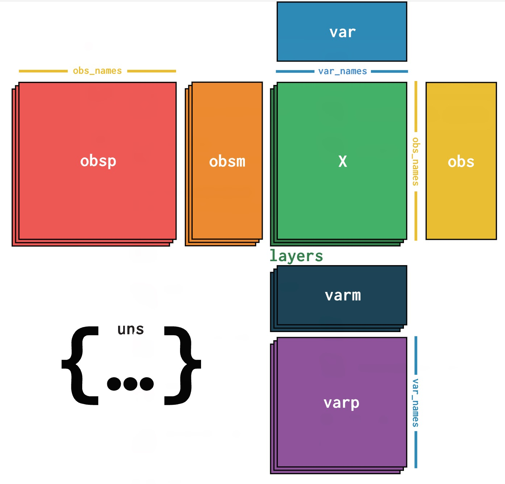
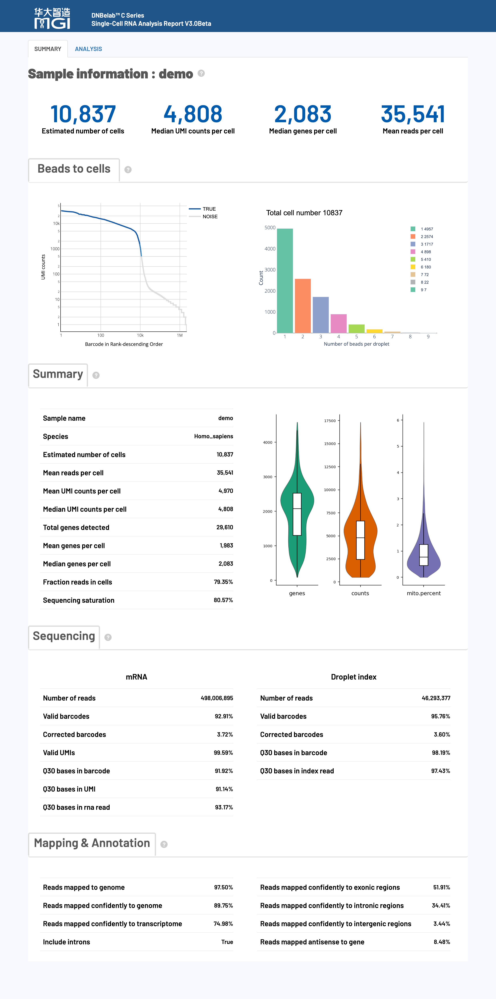
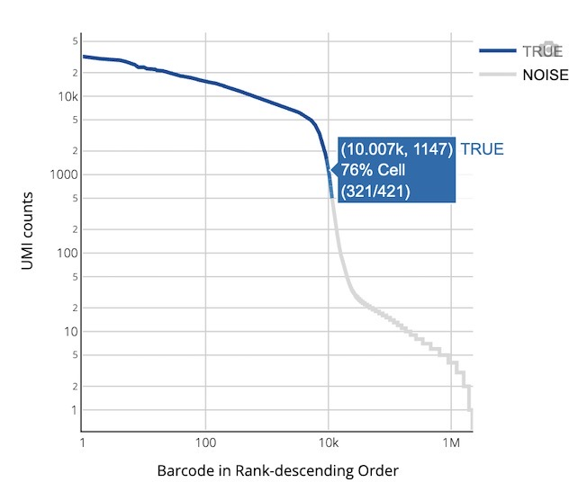
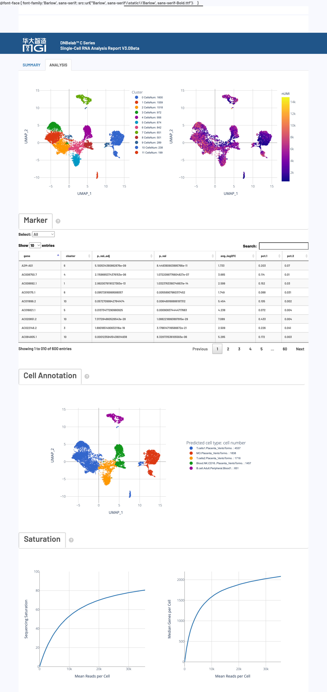

单细胞RNA分析完成后，会在指定的输出目录中生成标准化的文件和子目录结构，专门用于基因表达谱分析和细胞类型鉴定。本文档详细说明了每个输出文件的内容、格式和用途，帮助用户充分理解和高效利用单细胞RNA分析结果。
💡 提示: 所有输出文件均采用标准格式，兼容主流单细胞分析工具（如Scanpy、Seurat等），遵循国际通用的数据格式规范。
⚠️ 前提条件: 需要完成高质量的单细胞RNA测序数据预处理
.
├── analysis/ # 下游分析结果目录
│ ├── cluster.csv # 细胞聚类结果文件
│ ├── marker.csv # 差异表达基因标记文件
│ └── QC_Cluster.h5ad # 质控和聚类后的AnnData对象
├── anno_decon_sorted.bam # 比对注释并排序的BAM文件
├── anno_decon_sorted.bam.bai # BAM索引文件
├── filter_feature.h5ad # 过滤后的特征矩阵（AnnData格式）
├── filter_matrix/ # 过滤后的基因表达矩阵目录
│ ├── barcodes.tsv.gz # 细胞条形码文件
│ ├── features.tsv.gz # 基因/特征信息文件
│ └── matrix.mtx.gz # 稀疏矩阵文件（Market Matrix格式）
├── metrics_summary.xls # 分析指标汇总表
├── raw_matrix/ # 原始基因表达矩阵目录
│ ├── barcodes.tsv.gz # 原始细胞条形码文件
│ ├── features.tsv.gz # 原始基因/特征信息文件
│ └── matrix.mtx.gz # 原始稀疏矩阵文件
├── singlecell.csv # 单细胞metadata信息表
└── *_scRNA_report.html # HTML格式的分析报告
analysis/) 🎯 核心内容: 下游生物信息学分析结果，包括细胞聚类、差异基因和质控后数据
文件描述： 细胞聚类分析结果文件，采用 CSV 格式。包含细胞ID、聚类注释和降维坐标信息。
核心功能特点：
用途： 用于可视化细胞聚类和标识不同细胞类型。
文件描述： 各聚类的差异表达基因（标记基因）文件，采用 CSV 格式。记录基因ID、所属聚类、统计显著性和表达量差异等信息。
核心功能特点：
用途： 用于识别各细胞类型的特征基因。
文件描述： 经过质控和聚类分析的单细胞数据，采用 AnnData 对象（H5AD 格式）。包含完整的分析数据和元数据。
核心功能特点：
用途： 兼容Scanpy等分析工具进行下游分析。
参考： 详细格式参考AnnData格式说明。
🎯 核心内容: 原始测序数据比对到参考基因组的结果文件，包含完整的比对信息和细胞条形码标记
文件描述： 按基因组坐标排序的比对文件，采用 BAM 格式。包含所有比对到参考基因组的 reads 信息。
核心功能特点：
参考： 具体参考BAM格式说明。
文件描述： BAM 文件的索引文件，用于加速 BAM 文件的随机访问。
核心功能特点：
索引格式说明：
| 格式类型 | 使用说明 |
|---|---|
| BAI 格式 | 默认生成的索引格式，兼容性最佳，适用于大多数分析工具 |
| CSI 格式 | 当BAM文件包含染色体长度超过2^29-1个碱基时自动使用，支持更大的基因组 |
🎯 核心内容: 单细胞基因表达计数矩阵，分为原始数据和质控过滤后数据，采用标准稀疏矩阵格式
文件描述： 经过细胞鉴定后的特征矩阵，采用 AnnData 对象（H5AD 格式）。
核心功能特点：
用途： 用于下游分析和可视化。
参考： 详细格式参考AnnData格式说明。
filter_matrix/)目录描述： 包含三个核心文件的过滤后表达矩阵，采用 Market Matrix Exchange (MEX) 标准格式。
核心文件组成：
| 文件名 | 内容描述 |
|---|---|
barcodes.tsv.gz |
细胞ID列表，标识通过细胞鉴定后的细胞。每行包含一个细胞ID序列，对应矩阵的列索引 |
features.tsv.gz |
完整的基因/特征信息文件，包含基因ID、名称和类型信息。每行包含三列：基因ID、基因名称、特征类型，对应矩阵的行索引 |
matrix.mtx.gz |
基因表达计数矩阵，采用 Market Matrix 格式。包含矩阵维度信息和非零元素的行、列索引及数值 |
特点优势：
用途： 主要用于下游生物信息学分析。
参考： 关于矩阵格式详见Market Matrix格式说明。
raw_matrix/)目录描述： 包含三个核心文件的原始表达矩阵，采用 Market Matrix Exchange (MEX) 标准格式。
核心文件组成：
| 文件名 | 内容描述 |
|---|---|
barcodes.tsv.gz |
原始细胞ID列表，标识所有检测到转录本的细胞ID信息。对应矩阵的列索引 |
features.tsv.gz |
完整的基因/特征信息文件。包含基因ID、名称和类型信息 |
matrix.mtx.gz |
原始基因表达计数矩阵，包含所有原始计数数据 |
特点优势：
用途： 存储未经过滤的表达数据，用于质量控制和参数优化。
参考： 关于矩阵格式详见Market Matrix格式说明。
🎯 核心内容: 实验质量评估和统计指标汇总，提供完整的数据质量控制信息
文件描述： 关键分析指标的汇总表，采用 Excel 格式。包含测序数据质量、比对率、细胞数量、基因检测数等统计信息。
主要指标类别：
| 指标类别 | 包含内容 |
|---|---|
| 📊 基本统计 | 总 reads数、有效条形码比例、UMI质量、Q30碱基质量等基础测序指标 |
| 🧬 细胞识别 | 估计细胞数量、细胞内转录本含量比例、每细胞平均reads数等细胞调用结果 |
| 🎯 比对指标 | 基因组比对率、转录组比对率、外显子/内含子比例等比对统计 |
| 🔬 质量控制 | 测序饱和度、细胞基因数、细胞UMI数、检测到的总基因数等质控参数 |
质量控制标准：
用途： 用于评估数据质量和分析效果。
文件描述： 单细胞质量控制和统计信息表，采用 CSV 格式。包含细胞条形码、测序深度、检测基因数等质控指标，以及细胞合并状态和筛选结果。
核心功能特点：
用途： 支持下游个性化分析和VDJ分析中的细胞筛选与合并操作。
文件描述： 完整的分析报告，采用 HTML 网页格式。包含质控指标、聚类结果、差异基因表达等交互式可视化图表。
| 报告特点 | 内容描述 |
|---|---|
| 📊 交互式图表 | 质控指标、细胞聚类、标记基因等可交互可视化图表 |
| 📈 统计汇总 | 关键性能指标的数值汇总和趋势分析 |
| 🔍 详细解读 | 各项指标的生物学意义和技术解释 |
文件格式: HTML网页格式，支持所有主流浏览器
用途: 提供分析结果的综合概述
详细内容: 请查看 📊 网页报告释义 部分
技术规范: 输出文件采用的标准格式详细说明
.mtx.gz) 格式概述: Market Exchange Format (MEX) 是单细胞分析中广泛使用的稀疏矩阵存储标准，由三个核心文件组成，兼容性极佳。
matrix.mtx.gz: 压缩的稀疏矩阵文件。
barcodes.tsv.gz: 压缩的细胞条形码文件。
CELL1_N2，其中CELL1为细胞ID，N2为由两个条形码组成。features.tsv.gz: 压缩的特征信息文件。
Gene Expression。| 特性 | 详细说明 |
|---|---|
| 📊 空间效率 | 稀疏矩阵格式仅存储非零元素，对于单细胞数据（通常95%以上为零值）可节省大量存储空间 |
| 🔧 兼容性 | 兼容主流单细胞分析工具：Scanpy、Seurat等 |
| 🌐 传输性 | 国际标准格式，便于数据共享、发表和跨平台协作分析 |
Python/Scanpy 完整流程：
import scanpy as sc
import pandas as pd
# 读取MEX格式数据
adata = sc.read_10x_mtx(
'filter_matrix/', # MEX文件目录
var_names='gene_symbols', # 使用基因名作为变量名
cache=True # 启用缓存加速后续读取
)
# 数据预处理
adata.var_names_make_unique()
adata.obs_names_make_unique()
# 查看数据结构
print(f"细胞数量: {adata.n_obs}")
print(f"基因数量: {adata.n_vars}")
print(f"数据维度: {adata.shape}")
R/Seurat 完整流程：
library(Seurat)
library(dplyr)
# 读取MEX格式数据
counts <- Read10X(data.dir = "filter_matrix/")
# 创建Seurat对象
seurat_obj <- CreateSeuratObject(
counts = counts,
project = "scRNA_analysis",
min.cells = 3, # 基因至少在3个细胞中表达
min.features = 200 # 细胞至少表达200个基因
)
# 查看数据信息
print(paste("细胞数量:", ncol(seurat_obj)))
print(paste("基因数量:", nrow(seurat_obj)))
head(seurat_obj@meta.data)
.h5ad) 格式概述: AnnData ("Annotated Data") 是专为矩阵型数据设计的数据结构，特别适用于单细胞RNA测序数据分析。基于HDF5格式，提供高效的数据存储和访问能力。

| 📁 组件 | 🎯 功能 | 📏 维度 |
|---|---|---|
| X | 主表达矩阵 | n_cells × n_genes |
| obs | 细胞元数据 | n_cells × n_obs_features |
| var | 基因元数据 | n_genes × n_var_features |
| obsm | 细胞多维数据 | n_cells × n_components |
| varm | 基因多维数据 | n_genes × n_components |
| layers | 多层数据 | n_cells × n_genes |
| uns | 非结构化数据 | 任意对象 |
基础数据读取：
import scanpy as sc
import anndata as ad
import pandas as pd
import numpy as np
# 读取h5ad文件
adata = sc.read_h5ad('filter_feature.h5ad')
# 查看数据结构
print(adata)
print(f"表达矩阵维度: {adata.shape}")
print(f"细胞数量: {adata.n_obs}, 基因数量: {adata.n_vars}")
.bam) 格式概述: BAM (Binary Alignment Map) 是二进制格式，用于存储与参考基因组对齐的测序数据。在单细胞RNA测序中，包含位置排序的reads，同时附带细胞和分子条形码信息。
文件特征分析：
| 技术特性 | 详细说明 |
|---|---|
| 🗂️ 压缩效率 | 相比SAM格式，BAM采用BGZF压缩，文件大小减少约60-80%，显著降低存储成本和传输时间 |
| ⚡ 访问速度 | 二进制格式支持快速随机访问，配合索引文件可实现毫秒级别的区域检索和数据提取 |
| 🔄 排序状态 | 按基因组坐标位置排序（coordinate sorted），确保相邻reads在文件中连续存储，优化I/O性能 |
| 🏷️ 元数据丰富 | 包含完整的reads比对信息、质量分数、配对状态，以及单细胞特有的CB、UB、GX等标签 |
🧬 细胞和分子标识标签：
| 标签 | 数据类型 | 描述 | 生物学意义 |
|---|---|---|---|
CB |
字符串 | 细胞条形码合并后的细胞ID | 用于将reads归属到特定细胞，经过细胞条形码合并的信息 |
CC |
字符串 | 经过错误校正细胞条形码序列 | 经过错误校正的细胞条形码 |
CR |
字符串 | 原始测序细胞条形码 | 保留原始测序信息，用于质量评估和错误追溯 |
CY |
字符串 | 细胞条形码质量分数 | Phred质量分数，评估条形码测序的可靠性 |
UB |
字符串 | 错误校正后的UMI序列 | 用于分子去重，识别PCR重复和原始mRNA分子 |
UR |
字符串 | 原始测序UMI序列 | 保留原始UMI信息，用于质量评估和算法优化 |
UY |
字符串 | UMI质量分数 | Phred质量分数，评估UMI测序的准确性 |
🧬 基因注释和功能标签：
| 标签 | 数据类型 | 描述 | 功能用途 |
|---|---|---|---|
GX |
字符串 | Ensembl ID | 基因表达定量 |
GN |
字符串 | 基因名称 | 便于生物学解释，支持基因功能注释 |
TX |
字符串 | 转录本ID | 用于转录本水平的表达分析和可变剪接研究 |
AN |
字符串 | 反义转录本标记 | 识别反义RNA，评估文库方向性和非编码RNA表达 |
RE |
字符串 | 基因组区域类型 | 区分外显子(E)、内含子(N)、基因间区(I)，用于转录组特征分析 |
🎯 核心内容: HTML网页报告提供单细胞RNA测序分析结果的全面可视化展示和详细解读，包含关键性能指标评估和生物学解释
HTML网页报告是单细胞RNA测序分析的综合展示平台，整合了从数据质量控制到下游生物学分析的完整结果。该报告采用交互式可视化设计，帮助用户快速评估实验质量、理解分析结果并指导后续研究方向。
💡 使用建议: 建议按照报告展示顺序依次查看各项指标。
⚠️ 质量标准: 各项指标均提供了推荐阈值和质量等级，请结合具体实验目标进行综合评估。

🎯 核心功能: 细胞识别、质量评估和基因表达统计，提供实验整体效果的关键指标
📊 质量控制参考标准：
注意: 以下标准仅供参考，实际质量评估应考虑组织类型、细胞状态和实验目标等多种因素。不同样本间存在显著差异，建议结合具体实验背景进行判断。
| 指标名称 | 推荐值 | 可接受 | 需优化 |
|---|---|---|---|
| Mean reads per cell | ≥ 30,000 | 15,000–30,000 | < 15,000 |
| Median genes per cell | ≥ 1,000 | 500–1,000 | < 500 |
| Fraction reads in cells | ≥ 60% | 30–60% | < 30% |
| Sequencing saturation | ≥ 40% | 20–40% | < 20% |
🔍 详细指标解释：
| 指标名称 | 详细解释与技术要求 |
|---|---|
|
Estimated number of cells 估计细胞数量 |
在测序数据中被识别为真实细胞（而非背景噪音或空液滴）的细胞数量。
|
|
Species 物种信息 |
样本的物种来源或参考基因组信息，基于分析时使用的参考数据库确定。确保分析使用正确的参考基因组版本。 |
|
Mean reads per cell 平均reads数 |
每个细胞的平均测序reads数量，反映单细胞测序深度。
🔬 技术要求
|
|
Median/Mean UMI per cell 细胞中位/平均UMI数 |
每个细胞中检测到的唯一分子标识符(UMI)数量的中位数/平均值，用于评估单细胞测序的基因表达水平。
🔬 技术要求
|
|
Median/Mean genes per cell 细胞中位/平均基因数 |
每个细胞中检测到的基因数量的中位数/平均值，反映细胞转录组的复杂性。
🔬 技术要求
|
|
Total genes detected 检测到的总基因数 |
在整个样本中检测到的基因总数，要求每个基因至少在一个细胞中检测到一个UMI计数。
🔬 技术要求
|
|
Fraction reads in cells 细胞内reads比例 |
具有真实细胞相关条形码且比对上转录本的reads数量占所有有效条形码且比对上转录本的reads数量的百分比。
> ✅ 高比例指示：细胞捕获效率良好且背景噪音低
> ⚠️ 低比例原因：样品中游离的mRNA较多或存在空液滴 |
|
Sequencing saturation 测序饱和度 |
评估测序深度是否充分的指标，计算方法为1-(UMI数/reads数)。
🔬 技术要求
|
🎯 核心功能: 测序数据的基础质量评估，包括条形码识别率、UMI质量和测序准确性
📊 质量控制参考标准：
注意: 以下标准仅供参考，实际质量评估应考虑组织类型、细胞状态和实验目标等多种因素。不同样本间存在显著差异，建议结合具体实验背景进行判断。
| 指标名称 | 推荐值 | 可接受 | 需优化 |
|---|---|---|---|
| Valid barcodes | ≥ 80% | 70–80% | < 70% |
| Valid UMIs | ≥ 80% | 70–80% | < 70% |
| Q30 Base Quality | ≥ 85% | 75–85% | < 75% |
🔍 详细指标解释：
| 指标名称 | 详细解释与技术要求 |
|---|---|
|
Number of reads 读段数量 |
该文库分配获得的测序读段对总数，反映测序数据的总体规模。读段数量越多，理论上对细胞转录组的覆盖就越全面。 |
|
Valid barcodes 有效条形码 |
测序读段中条形码能在预设白名单中成功匹配的比例。
|
|
Corrected barcodes 纠错条形码 |
原始测序条形码通过纠错算法修正后，成功恢复到白名单中合法条形码的读段比例。
|
|
Valid UMIs 有效UMI |
从读段中提取的UMI序列中，不包含'N'碱基且不为同聚物（如AAAAAA）的UMI所占的比例。
|
|
Q30 Base Quality Q30碱基质量 |
测序准确率高于99.9%（错误率<0.1%）的碱基占比。
|
注： 以上所有比例指标的计算均以原始测序读段总数（
Number of reads）作为分母，这确保了各项指标之间的可比性和一致性。
🎯 核心功能: 评估reads与参考基因组的比对质量，包括比对率、特异性和基因组区域分布
📊 质量控制参考标准：
注意: 以下标准仅供参考，实际质量评估应考虑组织类型、细胞状态和实验目标等多种因素。不同样本间存在显著差异，建议结合具体实验背景进行判断。
| 指标名称 | 推荐值 | 可接受 | 需优化 |
|---|---|---|---|
| Reads mapped to genome | ≥ 80% | 50–80% | < 50% |
| Reads mapped confidently to genome | ≥ 60% | 40–60% | < 40% |
| Reads mapped confidently to transcriptome | ≥ 50% | 30–50% | < 30% |
| Reads mapped antisense to gene | < 10% | 10–30% | > 30% |
🔍 详细指标解释：
| 指标名称 | 详细解释与技术要求 |
|---|---|
|
Reads mapped to genome 基因组比对读段 |
所有测序读段中成功比对到参考基因组任意位置的比例，包括唯一比对和多重比对。
|
|
Reads mapped confidently to genome 基因组置信比对 |
能够置信比对到参考基因组的读段比例，主要来源于唯一比对。
|
|
Reads mapped confidently to exonic regions 外显子区域比对 |
置信比对到注释为外显子区域的读段比例。
|
|
Reads mapped confidently to intronic regions 内含子区域比对 |
置信比对到注释为内含子区域的读段比例。
|
|
Reads mapped confidently to intergenic regions 基因间区域比对 |
置信比对到不属于任何已注释基因的区域（即基因间区）的读段比例。
|
|
Reads mapped confidently to transcriptome 转录组置信比对 |
置信比对到转录本且能唯一归属于单个基因的读段比例。
|
|
Reads mapped antisense to gene 反义基因比对 |
成功比对到转录组但方向与注释基因相反的读段比例。
|
|
Include introns 包含内含子 |
控制是否在基因表达计数中包含比对到内含子区域的reads。
|
注： 以上所有比例指标的计算均以原始测序读段总数（
Number of reads）作为分母，这确保了各项指标之间的可比性和一致性。
🎯 核心功能: 提供全面的数据可视化分析，从细胞质量控制到下游生物学分析的完整展示
🔍 细胞鉴定曲线图 (Barcode Rank Plot)
🎯 分析目的: 可视化每个细胞的UMI数量分布，区分真实细胞与背景噪音。
📊 视觉编码: 🔵 蓝线（有效细胞）| ⬜ 灰线（背景噪音）| 🔷 蓝色渐变区（混合区域）

📏 图表轴系详解:
🔍 质量评估指导:
| 特征模式 | 质量解读 |
|---|---|
| ✅ 理想模式 | 明显"拐点"区分真实细胞和背景，真实细胞区域陡峭下降，背景区域平缓分布 |
| ⚠️ 异常模式 | 缺乏明显拐点（细胞浓度过低）、平缓下降（背景RNA过高） |
🧪 液滴磁珠分布图（真实细胞）: 展示真实细胞液滴中细胞条形码数量分布，理论符合泊松分布。
质量控制: 磁珠集中在1个时检查：oligo文库测序深度（>50M reads）、cDNA/oligo文库匹配性
📏 细胞数据分布图: 展示细胞基因数、UMI数、线粒体基因比例分布
| 指标 | 常见范围（参考值） | 异常解读（可能原因） |
|---|---|---|
| 基因数 | 多数细胞约 500–8000 个基因 | 过低：低质量细胞或RNA降解； 过高：可能为双细胞/多细胞 |
| UMI数 | 多数细胞约 1,000–50,000 个 | 过低：空液滴或低RNA含量； 过高：双细胞或文库扩增偏差 |
| 线粒体比例 | 一般 <10–20% | >20–25%：细胞处于压力、凋亡或破裂状态 |

🎯 核心功能: 细胞聚类分析、差异基因识别、细胞类型注释和测序深度评估的综合展示
🎨 细胞聚类分析图 (Cluster Analysis)
🎯 分析目的: 通过无监督聚类和降维可视化识别细胞亚群，并评估细胞质量分布
| 图表组成 | 技术详解和生物学意义 |
|---|---|
| 🎨 左侧聚类图 | 算法: Louvain无监督聚类 | 降维: UMAP二维投影 | 编码: 颜色区分细胞亚群 | 意义: 相似基因表达谱细胞归为同一聚类 |
| 📊 右侧UMI图 | 数据: 每细胞总UMI数量 | 坐标: 与左图UMAP一致 | 梯度: 蓝→红颜色梯度 | 质控: 识别高质量细胞区域和技术噪音 |
🔬 标记基因分析 (Marker Genes)
🎯 功能描述: 展示每个细胞聚类的特征性差异表达基因，用于识别和注释不同的细胞类型
📊 统计方法: 对每个基因在目标聚类与其他所有聚类之间进行差异表达检验
🔢 关键指标解释:
| 统计指标 | 含义和解读指导 |
|---|---|
P-val |
差异表达的统计显著性p值，数值越小表示差异越显著。阈值: < 0.05显著，< 0.01高度显著 |
p_val_adj |
经Bonferroni多重检验校正后的调整p值，控制假阳性率。推荐: 使用调整p值进行最终筛选 |
avg_log2FC |
平均对数倍数变化（log2尺度） |
pct.1 / pct.2 |
目标聚类/其他聚类中表达该基因的细胞比例 |
🔧 交互功能: 聚类筛选（下拉菜单选择特定聚类）| 基因搜索（搜索框快速定位基因表达）
🧬 细胞类型自动注释 (Cell Type Annotation)
🎯 注释原理: 基于参考数据库进行细胞类型的自动识别和分类
| 技术规格 | 详细说明 |
|---|---|
| 📚 参考数据库 | scHCL: 人类单细胞景观数据库 (Single-cell Human Cell Landscape) | scMCA: 小鼠细胞图谱数据库 (Single-cell Mouse Cell Atlas) |
| 🌍 物种支持 | 支持: Human（人类）、Mouse（小鼠） | 限制: 其他物种暂不提供自动注释功能 |
| ⚠️ 使用建议 | 参考性质: 注释结果仅供参考，需结合生物学背景验证 | 准确性: 受参考数据库覆盖范围限制 | 推荐: 结合标记基因综合判断 |
📈 测序饱和度分析 (Sequencing Saturation Analysis)
🎯 分析目的: 评估测序深度充分性和成本效益，指导实验设计优化
| 图表类型 | 技术原理和解读指导 |
|---|---|
| 📊 左侧饱和度曲线 | 计算: 饱和度 = 1 - (UMI数 / reads数) | 解读: 曲线平滑表明测序充足 |
| 📈 右侧基因数曲线 | 指标: 每细胞检测基因数中位数 | 意义: 反映转录组复杂性 | 优化: 指导测序深度和实验设计改进 |
💡 质量评估标准:
✅ 理想状态: 饱和度40-85%，基因检测曲线趋于平滑，细胞聚类清晰分离
⚠️ 需要优化: 饱和度过低(<20%)或过高(>85%)，基因检测数持续上升，聚类边界模糊
| 文档类型 | 资源链接和描述 |
|---|---|
| 🚀 快速入门 | 快速入门指南 - 第一次分析的完整教程 |
| ⚙️ 参数参考 | 参数参考手册 - 所有可配置参数的详细说明 |
| 🔬 分析流程 | 分析流程说明 - 整个分析流程的技术细节 |
| 🔧 安装配置 | 安装配置指南 - 系统要求、安装步骤和环境配置 |
更多详细信息请参考上方文档链接或联系技术支持团队。